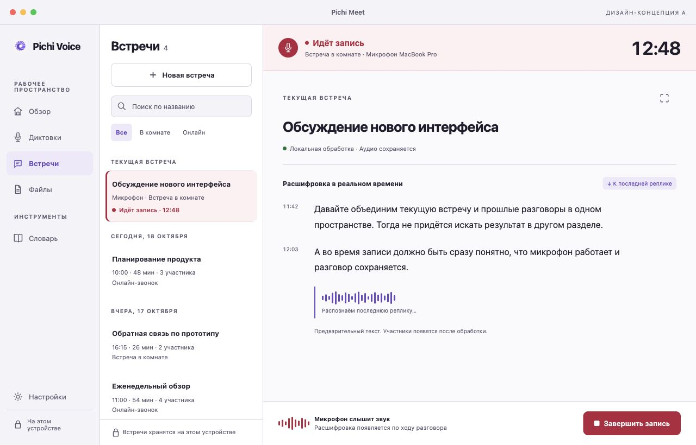
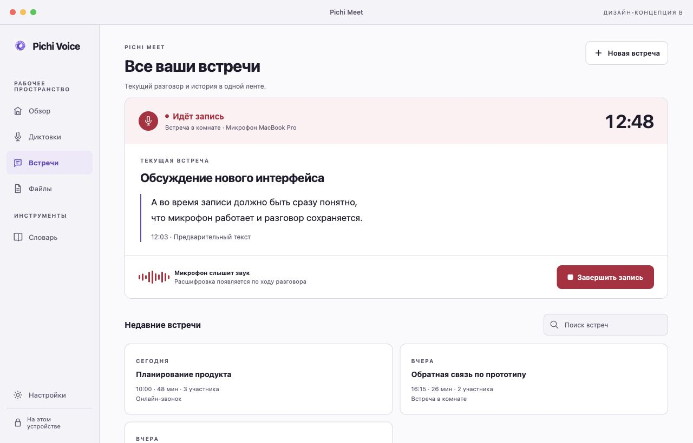
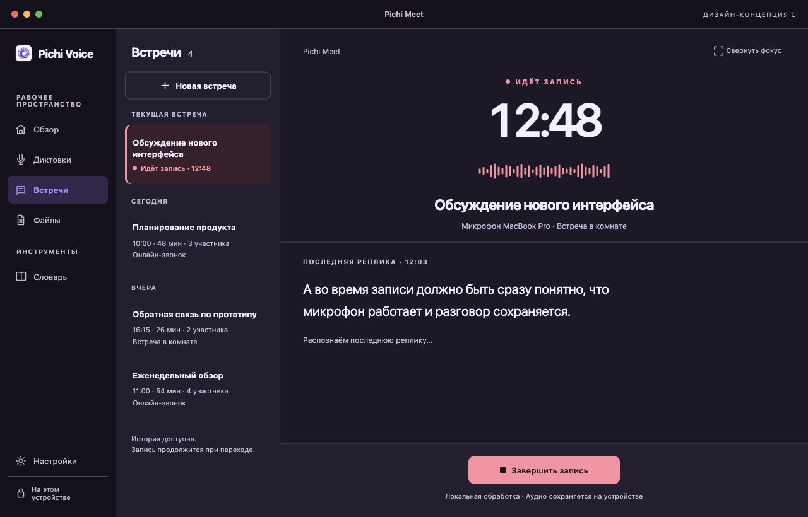
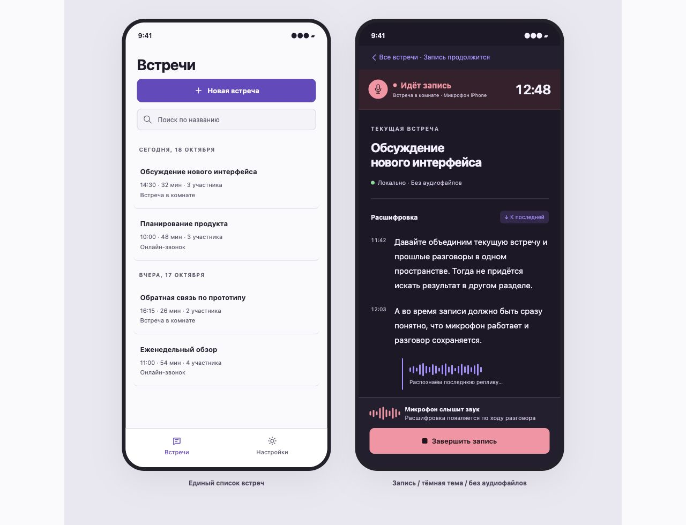

PICHI MEET · UX REVIEW · 18 ОКТЯБРЯ 2026
Встреча и её история должны жить в одном пространстве
Рекомендую вариант A: список встреч слева, документ справа. Запись становится отчётливым состоянием этой же встречи. Вариант C стоит добавить как переключаемый режим фокуса.
Метод и границы. Экспертная эвристическая оценка, разбор текущих исходников на a361b45a1ac9ec4a1eaf60a2799e959b7a0b464f, осмотр установленного macOS приложения и независимое критическое ревью прототипа. Пользовательские интервью, замеры выполнения задач и реальная запись для этого задания не проводились. Все изображения ниже - HTML-макеты с вымышленными данными, а не нативные экраны новой версии. Нативный код приложения не менялся.
1. Что сейчас мешает
На Mac история уже видна рядом со встречей. Проблема в её роли: узкая правая панель воспринимается как инспектор, в центре остаётся большой экран начала записи. На iPad/iPhone «Встречи» и «История» действительно разведены по разделам. Поэтому изменение должно объединить навигационную модель на всех платформах, а не только переставить блоки.
У пользователя три повторяющиеся задачи: начать разговор, убедиться, что он записывается, и позже найти нужный фрагмент. Текущая структура сильнее подчёркивает запуск, чем продолжение работы с уже созданной встречей. Визуально запись также недостаточно отделена от обычных действий, особенно на mobile.
Главный принцип: одна встреча сохраняет название, положение в списке и идентичность документа на всём пути: подготовка, запись, обработка, готовый текст. Навигация и владение активной записью должны быть независимы.
2. Три дизайн-направления
A. Рабочее пространство - рекомендую как основу
Один раздел «Встречи». В списке находятся поиск, начало новой встречи, закреплённая текущая сессия и архив по датам. Справа меняется содержание выбранной встречи. Красный цвет и квадрат Stop обозначают захват звука; фиолетовый остаётся для навигации. Список не исчезает при завершении.

Проверить запись · Готовый документ · Чтение архива во время записи
B. Лента - простой обзор
Текущая встреча показана большой закреплённой карточкой. Под ней лежат недавние встречи. Этот подход проще при небольшом количестве записей, но слабее для длительного чтения и сравнения нескольких документов. В прототипе подробный документ использует общую компоновку A.

C. Фокус - дополнительный вид во время записи
Крупный таймер помогает увидеть состояние с расстояния. Последняя реплика остаётся читаемой, история доступна рядом. Режим включается явно и запоминается по предпочтению пользователя. Автоматически затемнять всё приложение или принудительно открывать полноэкранный режим не предлагаю. Светлая версия C тоже подготовлена.

3. Критический UX-аудит
P1 - риск неправильного понимания захвата звука, потери контроля или восстановления. P2 - заметное ухудшение поиска, навигации и чтения. Это экспертные приоритеты, не частоты ошибок из исследования. Пути ниже относятся к проверенной версии исходников.
4. Как должен работать единый экран
Новая встреча → Подготовка → Идёт запись → Завершаем захват → Обрабатываем → Готово
Ошибка источника / прерывание → доступная часть + подходящее восстановление
- Вход. Активная встреча имеет приоритет. Иначе открывается последний выбранный документ. При пустом архиве показывается один понятный первый шаг.
- Подготовка. Видны источник звука и политика хранения. Редкие параметры, провайдер, модель и технические настройки открываются через «Изменить». Не заставлять выбирать модель перед каждой встречей.
- Запись. Сверху статус с таймером и названием источника, в центре читаемый текст, снизу управление. Уровень микрофона показывает поступление звука; статус распознавания отдельно объясняет задержку текста.
- Навигация. Чтение архива не завершает запись. Закреплённая строка и компактная полоса всегда дают вернуться и закончить встречу. Старт второй встречи блокируется с причиной.
- Прокрутка. Новая речь не сдвигает старый текст под пальцем. Следование включено только у нижней границы. Вместо непонятной стрелки - «К последней реплике».
- Завершение. Остановка не означает удаление. Подпись «Завершить запись» запускает завершение захвата и обработку. Встреча остаётся выделена, уже доступный текст остаётся на экране. Не показывать ложный процент, если нет достоверной оценки.
- Готовый документ. То же название, дата, участники и источник; доступен экспорт. Итоги только на платформах и в конфигурациях, где эта функция поддержана.
5. Выразительный режим записи без визуального шума
Постоянные сигналы
- «Идёт запись» с точкой и иконкой.
- Таймер с табличными цифрами, без прыжков ширины.
- Точный источник и его работоспособность.
- Stop с квадратом и явной подписью.
- Фактическая политика сохранения аудио.
Чего избегать
- Пульсации всей поверхности и мигающей рамки.
- Искусственной waveform в тишине.
- Скрытой остановки при смене раздела.
- Постоянной панели сложных настроек.
- Смешения ошибки источника и обычной тишины.
Подход опирается на видимость состояния системы: обратная связь должна объяснять происходящее. Это поддерживает NN/g, Visibility of System Status. Разделение основных действий и редких настроек соответствует NN/g, Progressive Disclosure. Это общие принципы; конкретная компоновка A - проектное решение для Pichi Meet.
6. Состояния, которые нельзя потерять
7. iPad и iPhone
iPad: список + документ при достаточной ширине. На узком окне одна колонка с логичным возвратом. Не пытаться постоянно разместить общий sidebar приложения, список встреч и документ на любом размере. Такой выбор соответствует рекомендациям Apple HIG, Split views: сохранять выбранный объект и учитывать компактные окна.
iPhone: один раздел «Встречи», внутри список → документ. История перестаёт быть отдельной вкладкой. При возврате в список или настройки видна компактная полоса активной записи. Доска ниже показывает список и открытую запись; переходы на телефоне в этом макете иллюстративные.

8. Доступность, типографика и русский язык
- Ориентиры контраста: обычный текст не ниже 4.5:1, крупный текст и значимые границы элементов не ниже соответствующих требований 3:1. Цвета состояния обязательно дополняются словами и формой. Основание: WCAG 2.2 и Use of Color. WCAG использована как ориентир, полное соответствие макета не заявляется.
- Для touch основных действий целевой размер 44 pt или больше; маленькая пиктограмма может находиться в большой области нажатия. Размеры для pointer и touch следует проверять отдельно.
- Использовать существующие роли AppTheme / FluidTypography. В макете системный sans; смена брендового шрифта не предлагается. В нативной проверке нужны весь русский алфавит, Ё/ё, разные веса, смешанный русский и английский текст.
- Поддержать Dynamic Type, 200% текста, клавиатуру, видимый фокус и VoiceOver. Не озвучивать таймер каждую секунду. Объявлять начало, остановку и ошибки состояния.
- Названия строк до двух строк, с полной версией в документе; не уменьшать шрифт для длинного заголовка. Проверить «Еженедельное обсуждение исследований и обратной связи» и короткую высоту окна.
- Ненавязчивая анимация только по реальному сигналу. При Reduce Motion оставить статический статус и таймер.
9. Что уже есть и что потребует разработки
Интеграция: использовать существующие MeetingSessionCoordinator, MeetingHistorySnapshot, MeetingSessionStore, конфигурацию сессии и здоровье треков. Отдельный выбор документа решает конкретную текущую блокировку навигации. Он не должен менять владение записью, её модель, ресурсы и отмену. Новая иерархия провайдеров, фабрики моделей и дублирование аудиопайплайна для этого UX не нужны.
Имена и логотипы остаются в portable brand package, цвета и текстовые роли в общей теме, интерфейсные строки в String Catalogs. Семантический recording цвет должен стать общим токеном темы с проверкой в импортируемых бренд-пакетах. Нельзя связывать импорт внешнего вида с политикой хранения или идентичностью установки.
10. Проверка выбранного направления
Следующий этап после выбора - нативная реализация и проверка реальных задач. Для iPad/iPhone сначала оба симулятора и нативные изображения на просмотр, затем физические устройства после рассмотрения результатов. Работающая HTML-кнопка и красивый скриншот не подтверждают работу микрофона или privacy.
- Проверка понимания. Показать экран на несколько секунд и спросить: записывается ли звук, какой источник, сохраняется ли аудио, как остановить. Ошибки понимания важнее эстетических предпочтений.
- Основная задача. Начать встречу, открыть старую, вернуться, завершить, найти готовый текст. Отмечать лишние переходы, неверные остановки, потерю выбранного документа.
- Чтение. Прокрутить вверх во время поступления речи, выделить текст, вернуться к последнему фрагменту. Новые данные не должны отнимать управление.
- Сбой. Тишина, потеря микрофона, потеря одного из двух треков, недоступный live текст, interrupted. Копия состояния и доступные действия должны соответствовать реальным данным.
- Матрица. Mac обычное/узкое окно, светлая/тёмная тема; iPad полный/узкий размер и поворот; iPhone портрет/ландшафт, клавиатура и крупный текст.
- Критерий принятия. Пользователь без подсказки различает запись и просмотр, находит Stop и понимает, что сохранено. Конкретные временные цели задавать после получения исходного замера, а не объявлять улучшение в процентах заранее.
11. Галерея экранов